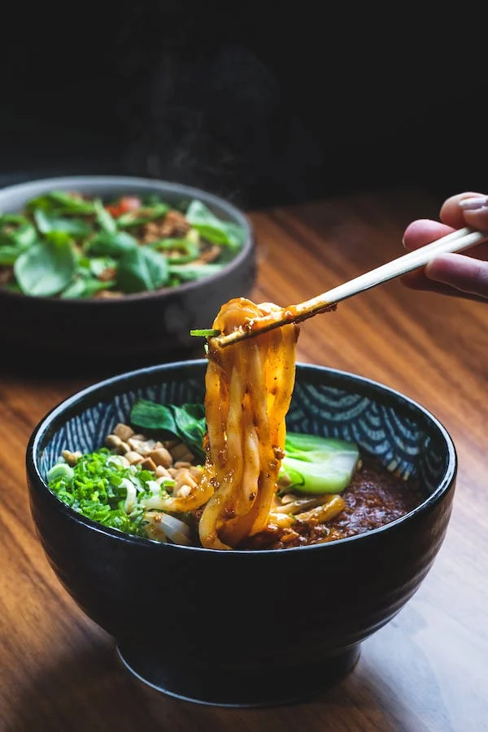
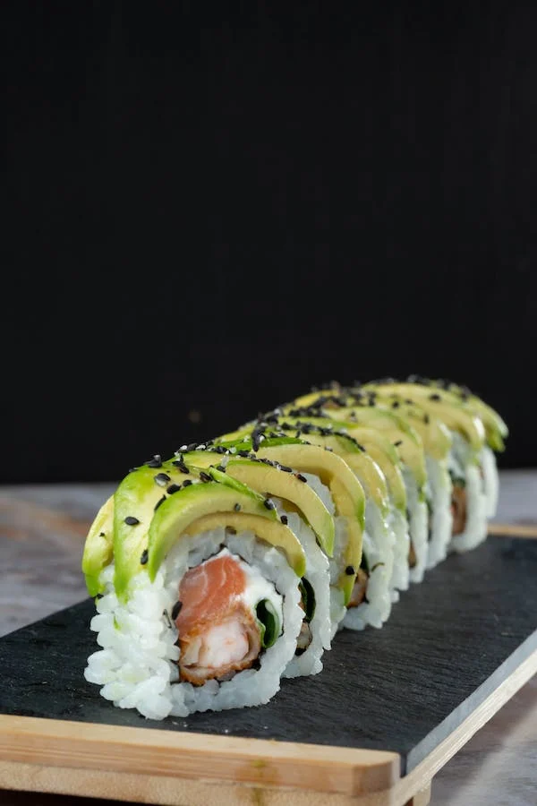
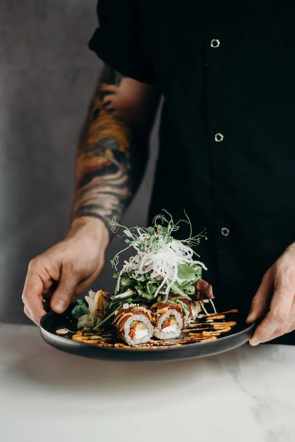
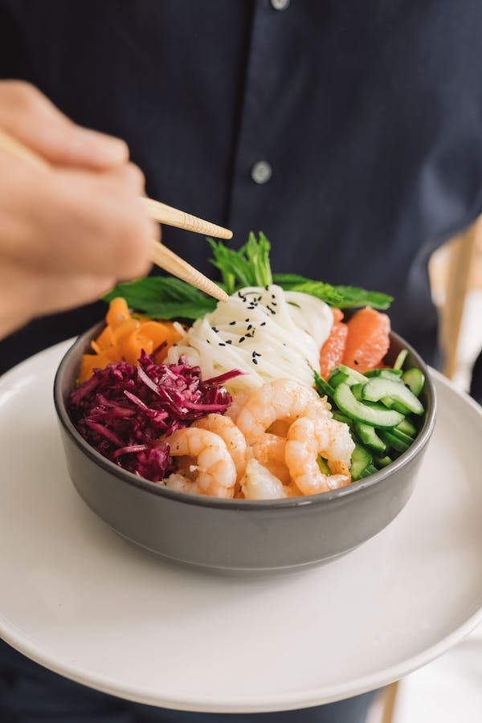
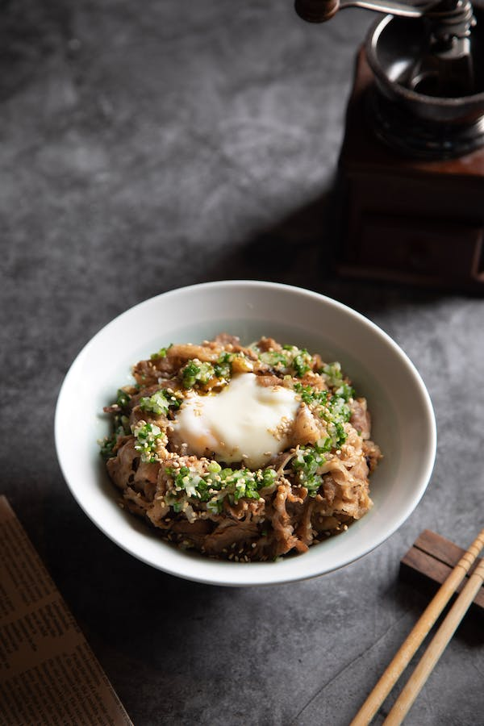

Menu Simple
Tonkatsu & Gyozas
3 empanadas japonesas + tonkatsu ro-su con gohan y colchon de vegetales
Miso Ramen
Sopa a base de caldo de miso, acomspañado de porciones de lomo de cerdo, verduras y fideos japoneses
Vegetariano
Age Doufu + Apanado de verduras de estacion acompañado de gohan y colchon de vegetales.
 Menu Degustacion
Degustacion para uno
Entrada,Ramen, Katsu, Guarniciones y un postre
Degustacion para dos
Entrada,Ramen, Katsu, Guarniciones y un postre
Degustacion para cuatro
Entrada,Ramen, Katsu, Guarniciones y un postre
Menu Celiaco
Cebiche de salmon rosado sin tacc
Cebiche de salmon rosado encebollado y un poco de cilantro
Kimuchi sin tacc
Miso-kimuchi con arroz
Ramen vegetariano sin tacc
Sopa a base de caldo de cerdo y pollo con fideos de Harusame apto para celiacos
 Menu Vegetariano
Shiitake, cebolla, harusame y negui
Hiratake katsu
Apanado de girgola, cutlet de girgola
Sushi vegetariano
6 piezas de tamago, pepino, shouga y plata